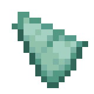

Utilisation
Le Trident est une arme de mêlée et à distance polyvalente et puissante, capable de causer de sérieux dégâts à ses ennemis, que ce soit au corps à corps ou en étant lancé comme un projectile. Ce qui distingue vraiment le Trident des autres armes, ce sont les enchantements spécifiques qui peuvent lui être appliqués, tels que Loyalty (Retour automatique du Trident après un lancer), Channeling (Invocation d'éclairs lors d'un orage), Riptide (Propulsion du joueur dans l'eau ou sous la pluie), et Impaling (Dégâts accrus contre les créatures marines).
Trident
Fiche d'identité
Type : Combat
Rareté : Rare
Durabilité : 251
Renouvelable : Oui
Stackable : Non
Crafting
|  | ||
Historique de Version
- 1.0 : Craft du trident ajouté au jeu.